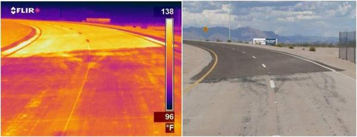
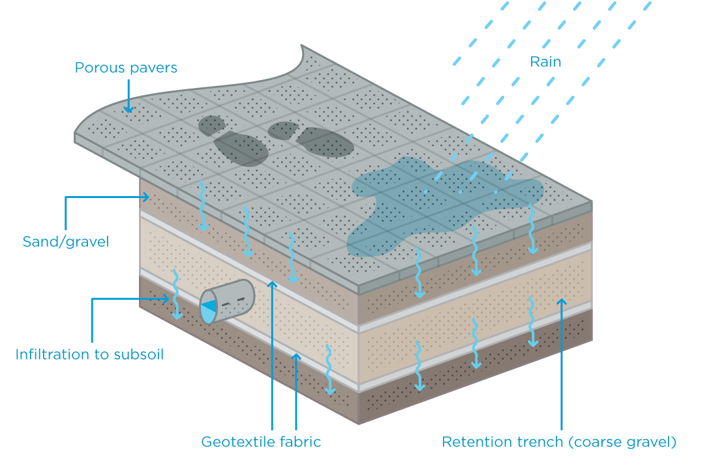
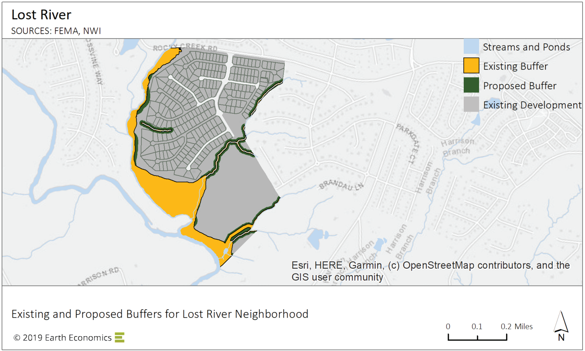
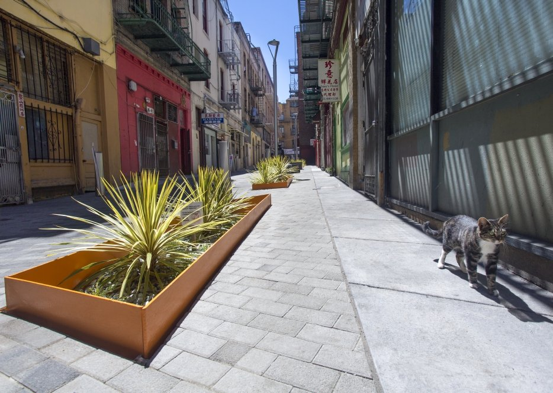
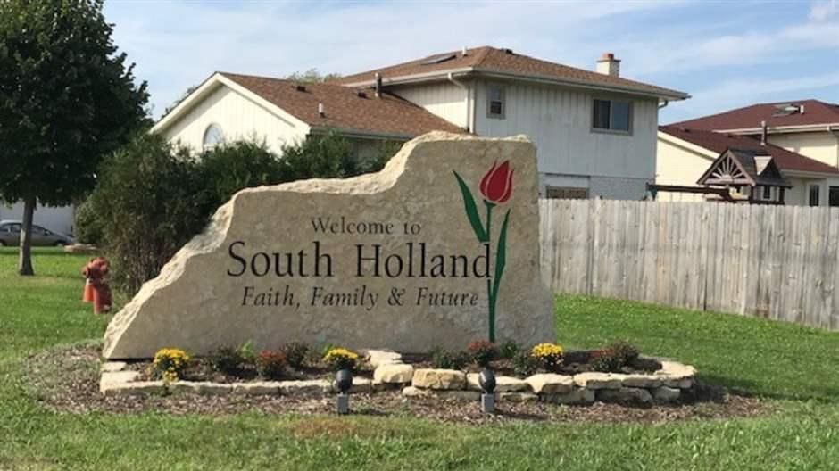

3.7 Resilience
3.7.1 Promote cool surfaces to reduce heat island effect

Thermal infrared (left) and visible (right) images of a road with light and dark segments. The infrared image shows that the light segment (bottom) is about 17 degrees Celsius (30 degrees Fahrenheit) cooler than the dark segment (top). Source: Berkeley Lab
| Location | New York City, NY |
|---|---|
| Details | Rather than using dark pavements, which attract 80-95% of sunlight, solar reflective “cool” pavements have increased reflectance. They typically use a reflective or clear binder, or a reflective surface coating. |
| Links | White Roof Project, NYC Berkeley Lab |
| Implementation Costs & Impact Factor | CoolSeal costs between $0.30 to $0.40 per square foot. Albedo increases lead to a reduction of outdoor air temperatures by 0.2 to 0.9 degrees Fahrenheit. In California cities with a lot of air conditioning, the savings of air conditioning energy due to lowered air temperature is up to 1 kWh ($0.60) per year per sq.m. of pavement modified. The avoided CO2 is valued at less than a penny a year per sq.m. Lower surface air temperature reduces ground level ozone. |
| Scalable Potential | Downtown Stockton could benefit from a set of public and private initiatives to retrofit existing commercial roofs and ground surfaces. |
| Similar | SMUD Cool Roof Rebate |
3.7.2 Promote permeable pavement to increase groundwater absorption

Source: City of Melbourne
| Location | Madison, WI |
|---|---|
| Details | Permeable pavement is a form of pavement that is highly porous pavement that allows rainwater to pass through it and into the ground. In addition to reducing surface runoff, it can trap suspended solids, thereby filtering stormwater. This also reduces peak discharge rates, meaning that flooding is more controlled. It is, however, most appropriate for sidewalks/pedestrian areas and low-speed driving areas. |
| Links | USGS |
| Implementation Costs & Impact Factor | $4.00-$6.00 per square foot. Read more here. |
| Scalable Potential | Stockton could identify low-lying areas that frequently flood and prioritize permeable pavement as part of regularly scheduled maintenance. |
| Similar | SF Permeable Sidewalks |
3.7.3 Reclaim urban streams and rivers to increase groundwater absorption and filtration

Source: Earth Economics
| Location | Greenville County, SC |
|---|---|
| Details | Reclaiming urban streams and rivers helps to restore the watercycle back to its natural processes. This helps to restore groundwater recharge, as well as natural water filtration processes. From an environmental perspective, it restores sensitive natural habitats. |
| Links | Earth Economics |
| Implementation Costs & Impact Factor | $28 to $129 per foot. Benefits: reduction in sediment removal ($2.76 per ton to manually remove); green space increases property values by up to 49% as properties change hands; contingent valuation varies from $10.83 to $270.40 per capita. |
| Scalable Potential | There are a number of waterways through Stockton that could be opportunities for proactive reclamation, given that FEMA and U.S. Army Corps guidelines do not yet fully factor in the science on climate change impacts on precipitation patterns. |
| Similar | Guadalupe River, San Jose |
3.7.4 Use green infrastructure to improve stormwater management

Source: Rain Guardians
| Location | San Francisco, CA |
|---|---|
| Details | Green Infrastructure is a method of reducing stormwater and pollution burden from stormwater systems. It does this through the creation of micro urban watersheds that have the potential to decrease erosion, improve air quality, increase land value, and reduce urban heat effects (thereby also reducing cooling loads). |
| Links | SFWater |
| Implementation Costs & Impact Factor | Contingent upon site. See table. |
| Scalable Potential | There are several key risks to Stockton’s water quality, most of which are tied to Stockton historic and present manufacturing activities. The Sharpe Army Depot and McCormick & Baxter Creosoting Company are both listed on the Environmental Protection Agencies National Priorities List, indicating they are a high priority superfund site. The EPA has identified additional sites of concern including Stockton Iron Works, Colberg Boat Works, Norge Cleaning Village, and Brea Agricultural Services. Two additonal sites, Stockton Naval Communications Station and the General Services Administration, are both located at the Naval Supply Center at Rough and Ready Island. As a result of these sites, as well as agricultural run-off and other sources, Stockton has elevated levels of Arsenic that are, on average, 4.5 times higher than recommended levels. Read more. |
| Similar | Hunts Point, NY NE Siskiyou Green Street, Portland, OR Caltrans Tres Rios Demonstration Constructed Wetlands, Phoenix Oakland Green Stormwater Spine |
3.7.5 Promote urban gardens as a substitute for displaced ecosystem services

Source: Philadelphia Inquirer
| Location | Philadelphia, PA |
|---|---|
| Details | As a result of their greying environment, cities often suffer from greater fluctuations in weather conditions, poor water infiltration, improper nutrient cycling, and lack of vegetative cover. These lead to reduced water quality and flooding, heat islands, and lack of ecological diversity. Using vacant lots, which reduce property values, residents of Philadelphia have developed urban gardens as a means of food production, increase property values, and provide educational opportunities on sustainability. |
| Links | Philadelphia Inquirer University of Pennsylvania |
| Implementation Costs & Impact Factor | Soil remediation costs between $5-40 per ton. Central Valley water costs between $15-40 per acre-foot. Philadelphia is estimated to have about 40,000 structureless vacant parcels amounting to 1,840 acres of unused land. These vacant parcels reduced property values by an average of 6.5%, leading to $3.6 billion in property tax loss. Households with an adult that participates in a community garden program are more likely to eat fruits and vegetables. Compared to vacant lots, agricultural lots realized far lower rates of soil erosion. |
| Scalable Potential | Local nonprofits like PUENTES already are in a position to expand their operations to develop more urban gardens in Stockton, contingent on land and water costs. |
| Similar | Detroit Garden Resource Program HOME GR/OWN Milwaukee |
3.7.6 Offer rebates for flood mitigation projects

Source: Pew
| Location | South Holland, IL |
|---|---|
| Details | Due to flooding from a local river, South Holland, IL offers up to $2500 per project per property. Approved projects include measures to prevent water from entering a home, including adding downspouts and floodwalls, sewer backup projects, such as installing overhead sewers, and removal of connections from stormwater sewers. In 2016, the program was further extended to cover up to $5,000 in costs if residents install systems to prevent sewer backups. |
| Links | Pew Charitable Trusts |
| Implementation Costs & Impact Factor | As of February 2019 (started in 1990), $800,000 in rebates; 1,172 households have participated. |
| Scalable Potential | Historical data on snowpack flooding has shown that 3 feet of flooding in Stockton could impact as many as 12,000 acres of land, with 20,000 housing units. Factoring in sea level rise projections, Climate Central estimates a 34 percent multi-year risk of at least one flood exceeding 3 feet from 2016 to 2030, a 93 percent risk by from 2016 to midcentury, and a 100 percent risk by 2100. Under the National Resaerch Council’s high-end projections, these chances increase to 50, 100, and 100 percent, respectively, and they compute a 100 percent risk of at least one flood exceeding 6 feet by the end of the century. |
| Similar | Wisconsin Department of Natural Resources Arkansas Private Wetland and Riparian Zone Creation and Restoration Incentives Act |